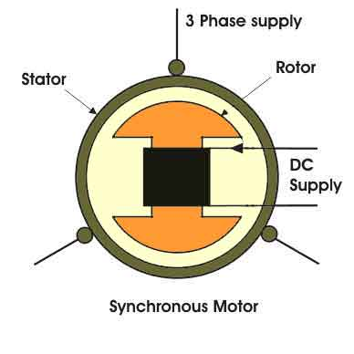

As the name suggests the synchronous motorsrotates at synchronous speed. The main advantage of synchronous motors are that they run on 3 ac supply and dc supply is given to the rotor when they run on synchronous speed the loss is very minimal. We can say that if the synchronous motors are designed to run only at rated synchronous speeds, then what is the use of introducing drives to them. The answer is pretty simple, synchronous motor drives makes the starting, pull in and braking process smooth and without any problems. We shall discuss about them one by one.
Starting Synchronous Motors
The problem with synchronous motors are that they are not self- starting. Before discussing the starting method of this motor, we should know about the type of supply and the rotor and the stator of the motor briefly. The stator of synchronous motors are similar to that of an induction motors but the only difference lies in the rotor, the rotor of the synchronous motors are given dc supply.

Now before knowing, how the synchronous motors are started, we should know why they are not self started? The answer can be given as, when 3 phase supply is given to the stator, there is a rotating magnetic flux which rotates at synchronous speed, and if the rotor is also given dc supply, rotor acts as a magnetic flux which rotates at synchronous speed, and if the rotor is also given dc supply, rotor acts as a magnet having two salient poles. As the rotor is at standstill position, it cannot follow the magnetic field which is rotating at synchronous speed. The rotor stacks at its position because the opposite poles move so rapidly that the rotor locks, this is the reason why synchronous motors are not self starting. Now coming to the point how synchronous motors are started. At first the synchronous motors are started as a normal induction motors, the rotor of the motor is not given dc supply, when the motor reaches the rotor and pull in takes place, which is discussed later.
Another method of starting the synchronous motor drives is by external motor. In this method the rotor of the synchronous motor is rotated by an external motor and when the speed of the rotor reaches near synchronous speed, the dc-field is switched on and pull in takes place. In this method, the starting torque is very low and it is not very popular method also.
Pull in of Synchronous Motors
When the rotor of the synchronous motors reaches near synchronous speed, then the dc field supply is switched on and the pull in process begins. As during switching on the dc supply due to the phase angle and torque angle there are various disturbances seen in the motor and there are several slip of poles of air – gap flux is also seen. As the pull in process is completed the rotor acquires synchronous speed. The complete pull in as fast as possible the dc supply should be switched on at the most favourable angle. Like when the synchronous motor is running as induction motor, the dc supply should be fed when the induction motor is at top speed, this will be the best moment because the speed difference will be
least at that point of time.
Braking of Synchronous Motors
As we know, there are three types of braking i.e, regenerative, dynamic and plugging type braking. But for synchronous motor drives only dynamic braking can be applied though plugging can be applied theoretically. Regenerative braking cannot be applied to them as they need higher speed than synchronous speed. Dynamic braking is done by disconnecting the motor from supply and connecting it across a three phase resistor. At that time the motor works as asynchronous generator and energy is dissipated at the resistors. Plugging is not used for synchronous motors as high plugging electric current can cause severe disturbance and damage in line.
 by
by {kind=link}